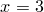

In the simple example of the previous section, we plotted the first column of a data file against the second. It is also possible to plot any arbitrary column of a data file against any other; the syntax for doing this is:
plot 'data.dat' using 3:5
This example would plot the contents of the fifth column of the file data.dat on the vertical axis, against the the contents of the third column on the horizontal axis. As mentioned above, columns in data files can be separated using whitespace and/or commas. Algebraic expressions may also be used in place of column numbers, for example:
plot 'data.dat' using (3+$1+$2):(2+$3)
In such expressions, column numbers are prefixed by dollar signs, to distinguish them from numerical constants. The example above would plot the sum of the values in the first two columns of the data file, plus three, on the horizontal axis, against two plus the value in the third column on the vertical axis. A more advanced example might be:
plot 'data.dat' using 3.0:$($2)
This would place all of the data points on the line , meanwhile drawing their vertical positions from the value of some column  in the data file, where the value of is itself read from the second column of the data file.
in the data file, where the value of is itself read from the second column of the data file.
Later, in Section 4.4, I shall discuss how to plot rows of data files against one another, in horizontally arranged data files.
It is also possible to plot data from only selected lines within a data file. When Pyxplot reads a data file, it looks for any blank lines in the file. It divides the data file up into data blocks, each being separated from the next by a single blank line. The first datablock is numbered 0, the next 1, and so on.
When two or more blank lines are found together, the data file is divided up into index blocks. The first index block is numbered 0, the next 1, and so on. Each index block may be made up of a series of data blocks. To clarify this, a labelled example data file is shown in Figure 2.2.
0.0 0.0 |
Start of index 0, data block 0. |
1.0 1.0 |
|
2.0 2.0 |
|
3.0 3.0 |
|
A single blank line marks the start of a new data block. |
|
0.0 5.0 |
Start of index 0, data block 1. |
1.0 4.0 |
|
2.0 2.0 |
|
A double blank line marks the start of a new index. |
|
... |
|
0.0 1.0 |
Start of index 1, data block 0. |
1.0 1.0 |
|
A single blank line marks the start of a new data block. |
|
0.0 5.0 |
Start of index 1, data block 1. |
etc |
By default, when a data file is plotted, all data blocks in all index blocks are plotted. To plot only the data from one index block, the following syntax may be used:
plot 'data.dat' index 1
To achieve the default behaviour of plotting all index blocks, the index modifier should be followed by a negative number.
It is also possible to specify which lines and/or data blocks to plot from within each index. To do so, the every modifier is used, which takes up to six values, separated by colons:
plot 'data.dat' every a:b:c:d:e:f
The values have the following meanings:
|
Plot data only from every |
|
Plot only data from every th block within each index block. |
|
Plot only from line onwards within each block. |
|
Plot only data from block onwards within each index block. |
|
Plot only up to the |
|
Plot only up to the th block within each index block. |
Any or all of these values can be omitted, and so the following would both be valid statements:
plot 'data.dat' index 1 every 2:3 plot 'data.dat' index 1 every ::3
The first would plot only every other data point from every third data block; the second from the third line onwards within each data block.
A final modifier for selecting which parts of a data file are plotted is select, which plots only those data points which satisfy some given criterion. This is described in Section 4.3.
 th line in data file.
th line in data file. 
 th line within each block.
th line within each block.